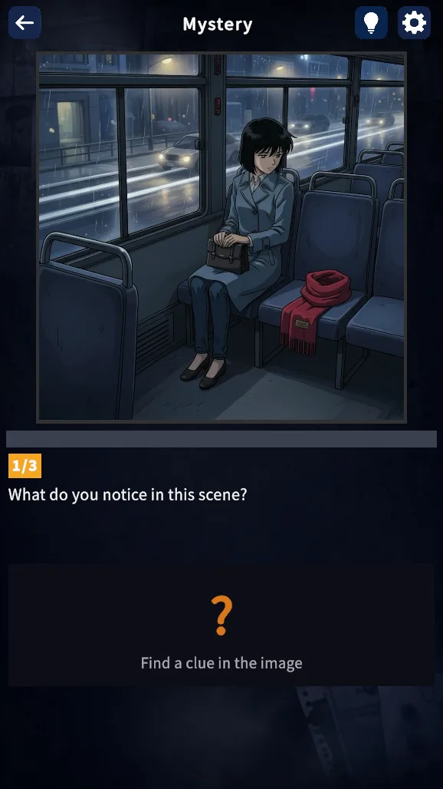
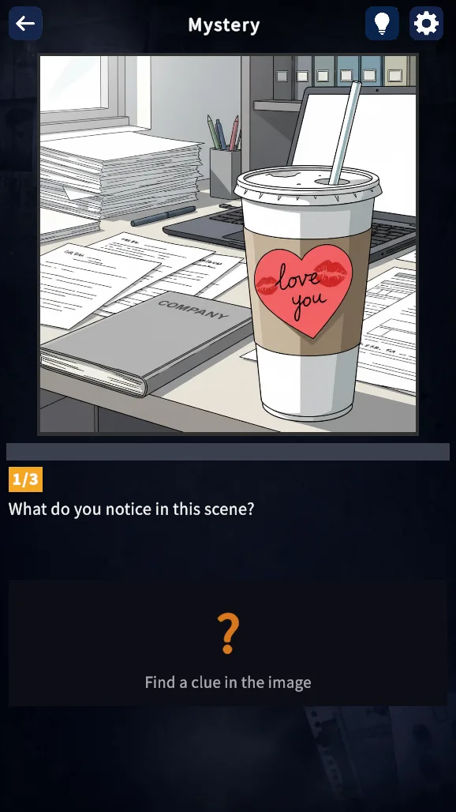
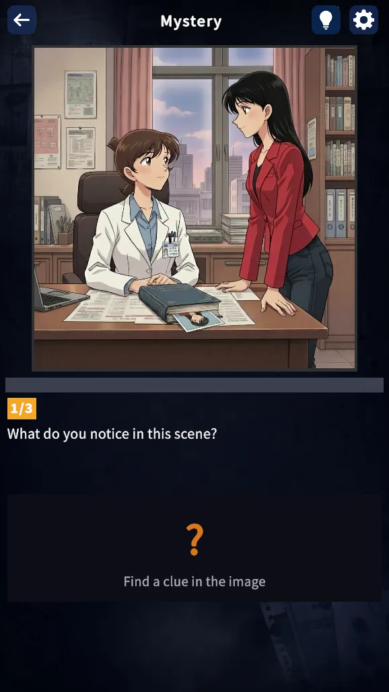

빨간 목도리 The Red Scarf
늦은 밤 버스. 옆자리의 빨간 명품 목도리는, 그저 두고 내리기엔 너무 좋아 보였다. A late-night bus. The red designer scarf on the seat across looked too nice to leave behind.
늦은 밤, 마지막 버스에 탔다. 옆자리에 빨간 목도리가 놓여 있다. 조금 전까지 누군가 앉아 있었던 자리. 그 사람은, 어디로 간 걸까. It’s late. You’re on the last bus home. Across the aisle, there’s a red scarf on the seat. Someone was just there. So where did they disappear to?

장면을 가만히 들여다보세요. 무엇이 보이는지.
누가 거짓말을 하고 있는지.
Look at the scene. Then look closer.
Who’s lying.
3개의 질문 · 1개의 진실 Three questions · One truth
방법 / How to play Method / How to play
에피소드마다 단 한 컷. 눈에 보이는 것이 모든 단서입니다. 빠르게 넘기지 마세요. A single still per case. Everything you need is already in front of you. Don’t rush past it.
정답이면 다음 진실이 풀리고, 오답이면 다시 들여다볼 기회가 생깁니다. Get one right, the next twist unfolds. Wrong, and you get another look.
짧지만 결코 가볍지 않은 결말. 사건 노트가 마지막 한 조각을 채웁니다. A short ending that won’t leave you. The case notes complete what’s missing.
에피소드 / Episodes Episodes
늦은 밤 버스. 옆자리의 빨간 명품 목도리는, 그저 두고 내리기엔 너무 좋아 보였다. A late-night bus. The red designer scarf on the seat across looked too nice to leave behind.

몇 달째 이어지던 사이. 어느 날 그녀가 연락을 끊고, 회사도 그만뒀다. A months-long thing between us. One day she stopped answering — and quit the company.

10년 만에 길에서 마주친 고등학교 동창. 그녀의 눈빛이 어딘가 차가웠다. Ran into an old classmate after ten years. Something in her eyes had gone cold.
매일 새벽 3시. 위층에서 들려오는 쿵, 쿵, 쿵. Every night, 3 a.m. sharp. Thud, thud, thud from upstairs.
중고폰을 직거래로 샀다. 판매자가 케이스를 서비스로 끼워줬다. Bought a used phone in person. The seller threw in a free case.
“이번 달 무료 염색 대상자세요.” 단골 미용실 원장의 미소. 왜 하필 나였을까. “You’ve been selected for a free color treatment this month.” The salon owner’s smile looked rehearsed.
배달 음식을 시켰다. 주문하지 않은 음식이 하나 더 들어 있었다. Ordered takeout. There was one extra dish in the bag I hadn’t ordered.
다음 사건은 아직 기록 중입니다. The next case is still in the dark.
동행자 / The cast The cast
한 손엔 늘 필름 카메라가 들려 있다. 현장에는 바짝 다가가지 않는다. 멀찍이 떨어져 한 컷을 담고, 찍은 사진을 몇 번이고 다시 본다. Always carries a film camera. Never gets close to a scene — works it from a distance. Then she looks at the photo. Again. And again.
담당 사건 — TWIST · CRIME Beat — TWIST · CRIME
사건의 시간을 거꾸로 되짚는다. 누가 언제 어디 있었는지부터 따진다. 감정은 그 다음 일이다. She works a case in reverse. Where. When. Who. The why can wait. Feelings wait longer.
담당 사건 — THRILLER · REVENGE Beat — THRILLER · REVENGE
방에 들어서면 왠지 모르게 어색한 점이 가장 먼저 눈에 띈다. 자기도 이유는 모른다. 하지만 그 직감은 아직 한 번도 빗나간 적이 없다. She walks into a room and something feels off. She can’t tell you what. She just knows. And she hasn’t been wrong yet.
담당 사건 — HORROR · QUIET Beat — HORROR · QUIET
오늘 밤, 한 컷 안에서 Tonight, in a single scene